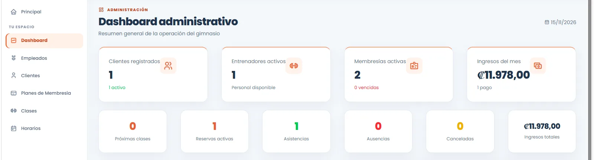
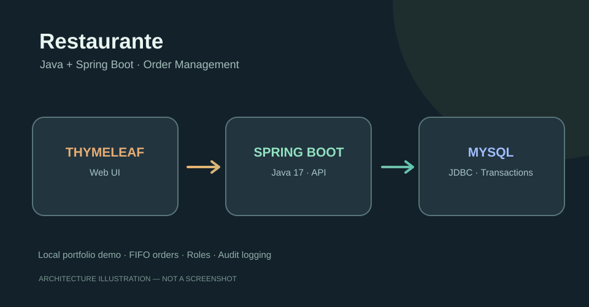

REAL PROJECT SCREENSHOT
01 / .NETAzure portfolio demo
StockFlow
Multi-tenant inventory, purchasing and sales management. Role-based security, transactional stock movement, dashboards and PDF reports.
Hi, I'm Henry González Alguera.
Junior software developer focused on C#, ASP.NET Core and SQL Server, with practical projects deployed to Azure, plus experience with Python data analytics and Java backend development.
// From interface to cloud infrastructure
01 / SELECTED WORK
Portfolio work built to solve concrete problems, with source code, clear architecture, and verifiable results.
Multi-tenant inventory, purchasing and sales management. Role-based security, transactional stock movement, dashboards and PDF reports.

Full-stack gym management with members, trainers, administrators and role-based modules. Public staging demo; advanced workflows still require E2E validation.

Python/pandas pipeline for cleaning sales and inventory records, reconciliation and decision-ready reporting using synthetic data.

Restaurant order workflow with FIFO processing, secured REST endpoints, JDBC transactions, audit logs and automated MySQL integration tests.
Note: Azure demos use free-tier resources and may take longer to start. Portfolio applications are not production services; use fictitious test data only.
02 / TECHNICAL EXPERTISE
A practical toolkit shaped by building, deploying and testing real portfolio applications.
C#, .NET 10, ASP.NET Core MVC, REST APIs, Dapper, SQL Server, JWT, stored procedures.
Azure App Service, Azure SQL, Git, GitHub, GitHub Actions, CI and deployment workflows.
Python, pandas, Jupyter, Excel, data cleaning, validation, reports and charts.
Java 17, Spring Boot, Spring Security, Thymeleaf, MySQL, JDBC and JUnit.
03 / ABOUT ME
I'm based in Heredia, Costa Rica. I've completed all coursework for a Bachelor's in Computer Systems Engineering at Universidad Fidélitas and am fulfilling the remaining community service (TCU) requirement before graduation.
My previous experience in technical operations and dental technology taught me how to investigate issues, document processes, collaborate with teams, and work carefully with quality requirements. Today I apply that mindset to software engineering projects.
Connect on LinkedInB.S. Computer Systems Engineering (graduation pending).
Technical services and dental technology workflows.
Technical operations, process quality and digital dental workflows.
Technical production and digital dental model workflows.
04 / WHAT'S NEXT
I'm interested in junior software development, .NET/backend roles, IT analyst and data analyst opportunities. I welcome conversations with engineers, hiring teams and other builders.